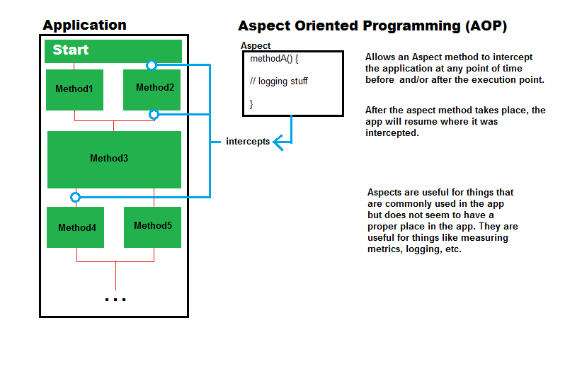
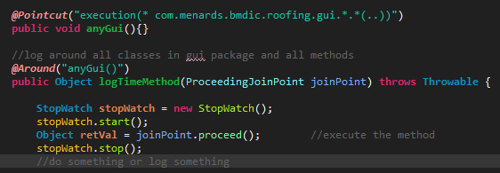
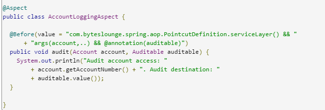
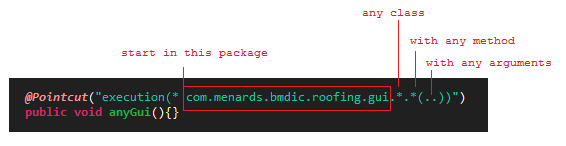
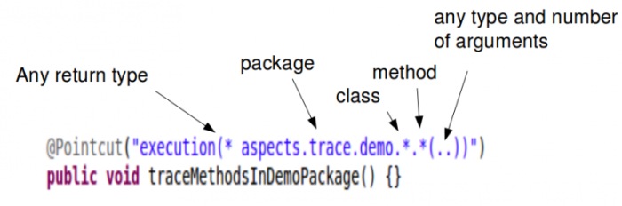
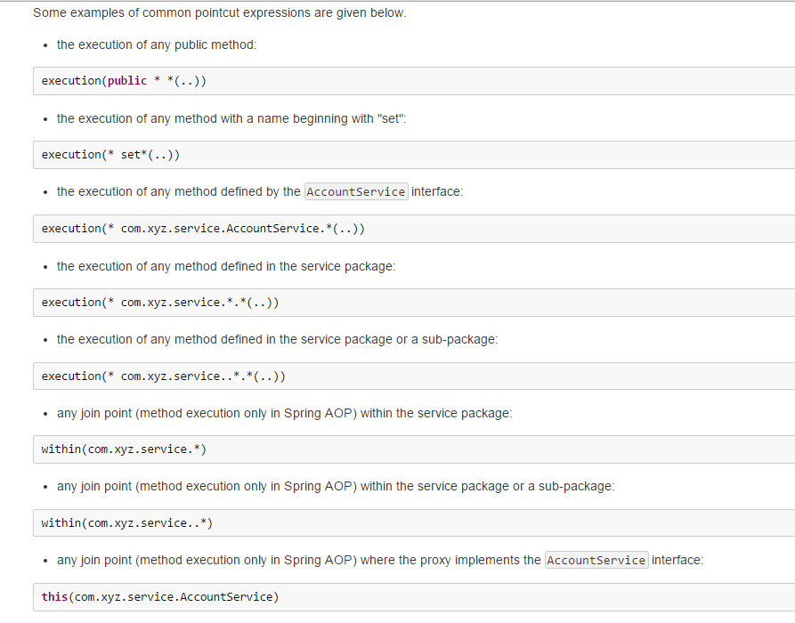
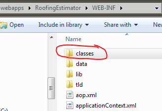

The idea of intercepting a point/method within your application's execution (before and/or after) and running another method (aspect method) before continuing on with your application. This is useful for things like logging every method in your app or doing metrics without hardcoding codes into every class in your app.
AspectJ is a framework that allows you to use AOP in java. There are some jar files you'll have to install such as AspectJ, AspectJRT, AspectJWeaver. There are 3 ways to use AspectJ in your app. One is through annotations, the other implementing beans inside your applicationContext.xml, or implementing interfaces. The easiest way to use ApsectJ is to implement the Annotation method.
Pointcuts are what you use to indicate where in your program should another set of code enter. Examples of an "Annotation pointcut":
to target a return type you have to use the full path to the type. Example where Ball is the return type
("execution(com.menards.Ball com.menards.gui.*.*(..))")
Example of non-annotation pointcut
Meaning of pointcut syntax  Visit TimerAspect.java in Siding or Roofing to see examples.
Overview of pointcut visually 
Pointcut links 
AOP uses one of two types of weaving for AOP to work, Load-time and compile-time. Compile-time requires that your objects are setup as beans (classes that have @Aspect annotation or @Component). Load-time is more suitable for objects that are not beans which don't have that aspectj annotation.
Compile-time is what some would consider more advance and better, but could be performance costly as all the classes needed to weave will only get created at compile time or when the app is initiated.
When your classes are not beans use Load-time. Load-time is better performance because you weave all the classes you need at build time. So at compile-time, the app doesn't have to weave anymore. Objects that are not beans and cannot be scanned using aspectJ (because they don't have the @Aspect annoation) , load-time weaving is your friend. It turns objects that are non-beans to become noticeable in aop environment be waeaving them ahead of time into the WEB-INF/classes/ folder.
In tecserver, under your webapp's WEB-INF, you'll see a classes folder holding the classes you woven.
These are the classes that joinpoints will cut, any other classes not in here will not trigger.
[org.springframework.web.context.support.XmlWebApplicationContext] Error creating bean with name 'loadTimeWeaver': -javaagent:org.springframework.instrument.jar
It means in your C:\app\tcserver\designit\conf\Catalina\localhost the application context file was not found. sometimes starting tcserver deletes this file. just copy the file from the app's environment folder stage/dev/prod and paste it inside localhost.